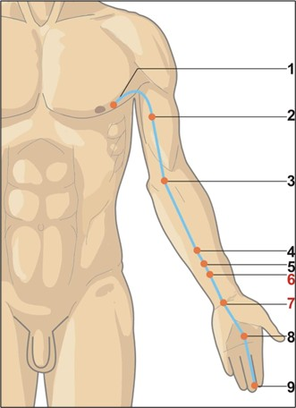

Fereastra intimității și reconectării
Pericardul atinge potențialul maxim seara, între orele 19:00 și 21:00 — fereastra naturală a tranziției spre introspecție, relaxare și intimitate. Palpitațiile serale, anxietatea de amurg sau dificultatea de a te „deconecta" de la muncă sunt KPI clinici direcți ai dezechilibrului Focului ministerial.
Energie, ore & elemente asociate
☯Tip energetic
- Yin profund — Shou Jueyin (手厥阴): Cel mai interior nivel Yin al mâinii, asociat cu protecția nucleului ființei: inima fizică și Shen-ul (Spiritul). Este „ultimul bastion" care apără Împăratul.
- Meridian pereche: Triplu Încălzitor (Shou Shaoyang 手少阳). Împreună reglează circulația Qi-ului, fluidelor și homeostazia termică, pe lângă integrarea emoțiilor în context social.
- Spirit: Focul Ministerial (相火 Xiāng Huǒ) — complementul Focului Imperial al Inimii. Guvernează relațiile interpersonale, sexualitatea, bucuria și capacitatea de conectare profundă.
- Organ de simț asociat: Limba (împărțit cu Inima) — mai ales sensibilitatea gustativă și calitatea vorbirii emoționale.
🔥Element Foc (火) — Focul ministerial
- Direcție: Sud | Anotimp: Vara (târzie)
- Climat: Căldura | Culoare: Roșu-carmin
- Gust: Amar | Sunet: Râsul
- Emoție: Bucuria (Xi 喜) în echilibru; anxietatea, panica sau mania în dezechilibru
- Țesuturi: Vasele de sânge (prin legătura cu Inima) & pielea palmelor
- Organ de simț: Limba și discursul emoțional — claritatea cu care ne exprimăm sentimentele
🕐Ceasul organic — 24 h
- Înainte — Rinichii (KD): 17:00–19:00. Finalizează stocarea energiei profunde și pregătesc trecerea spre Focul ministerial al serii.
- Pericardul (PC): 19:00–21:00. Fereastra reconectării: cu sine, cu familia, cu partenerul. Este momentul optim pentru activități intime, conversații profunde și relaxare conștientă.
- După — Triplu Încălzitor (TW): 21:00–23:00. Preia energia și o distribuie în cele Trei Arzătoare pentru recuperarea nocturnă.
- Semnificație clinică: Palpitații la 19–21 = Foc în Pericard sau deficit de Qi. Anxietate marcată seara = perturbarea legăturii PC-HT. Insomnie de adormire = Foc PC netransmis spre TW.
GB
LV
LU
LI
胃
脾
HT
SI
BL
KD
心包
TW
Traseu & anatomie energetică

Punct de emergență superficială, la 1 cun lateral de mamelon (în spațiul intercostal 4). Origine toracică — reflectă rolul de protector direct al Inimii și Shen-ului.
2 cun sub pliul axilar anterior, între capetele scurt și lung ale bicepsului. Meridianul coboară pe fața antero-medială a brațului, între meridianele Pulmonar (anterior) și Inimă (posterior).
La pliul cotului, pe marginea ulnară a tendonului bicepsului brahial. Punct He-Mare al meridianului — major pentru răcirea Focului PC și calmarea palpitațiilor și greții.
Coboară între tendoanele palmar lung și flexor radial al carpului. PC-4 (5 cun de pliul încheieturii) — Xi-Fisură pentru urgențe cardiace. PC-5 (3 cun) — reglare emoțională și flegmă.
PC-6 la 2 cun de pliu — cel mai utilizat punct al meridianului (antiemetic universal, anti-anxietate, anti-panică). PC-7 exact la pliul încheieturii — Shu-Abrupt și Yuan-Sursă, sedare Foc.
PC-8 în centrul palmei (între metacarpienele 2–3) — dispersează căldura internă intensă. PC-9 la vârful degetului mijlociu — punct de urgență pentru insolație și comă.
🔗Conexiuni interne profunde
- Origine în centrul toracelui → Inima (protejată): Meridianul naște din zona pericardului (învelișul fibroseretic al inimii). O ramură internă se conectează direct cu Inima și iese în axilă. Pericardul absorbe orice agresiune înainte ca aceasta să atingă Împăratul (Inima).
- Ramura descendentă — Cele Trei Arzătoare: O ramură internă traversează diafragma și trece prin toate cele Trei Arzătoare (Superior, Mijlociu, Inferior), conectând Focul ministerial cu digestia, funcția hormonală și funcția renală.
- Legătura cu Rinichiul (Jing & libido): Conexiunea profundă PC-KD explică influența Pericardului asupra funcției sexuale și a vitalității profunde. Palpitații cu scăderea libidoului = conexiunea PC-KD perturbată.
- Perechea PC-TW (Yin-Yang ministerial): Pericardul (Yin interior) și Triplu Încălzitor (Yang exterior) formează cuplul termic al corpului — reglează homeostazia termică și integrarea emoțiilor în context social.
Rol: „Gardianul Inimii" — funcții fiziologice
🛡️Protecția Inimii & Shen-ului
Pericardul (Xin Bao Luo 心包络) este Cancelarul sau Gardianul Inimii. Absoarbe șocurile emoționale și patogene externe, împiedicând agresiunea directă asupra Împăratului. Dacă agresorul este prea puternic, Pericardul se sacrifică — simptomele apar la PC înainte să afecteze HT.
💓Reglarea circulației & a Qi-ului cardiac
Împreună cu Inima, guvernează circulația sângelui în vasele periferice. Punctele PC (mai ales PC-6) sunt esențiale pentru a debloca stagnările de Qi și sânge din torace — palpitații, dureri precordiale, constricție toracică.
💞Armonizarea emoțiilor & a relațiilor
Pericardul mediază interacțiunea socială și capacitatea de a stabili relații intime. Gestionează emoțiile din contactul cu ceilalți — de la bucurie și iubire, la dezamăgire, trădare și pierdere afectivă.
🌡️Conexiunea cu funcția sexuală
Prin legătura cu Focul Ministerial (Ming Men 命门) și Rinichiul, Pericardul influențează libidoul, excitația și capacitatea de a experimenta plăcerea. Anxietatea și frica de intimitate sunt adesea un dezechilibru PC.
🔥Integrarea Celor Trei Arzătoare
Prin ramura descendentă, Pericardul asigură comunicarea între Focul spiritual al Inimii și Focul fiziologic al digestiei. Explică de ce stresul emoțional perturbă digestia și de ce problemele digestive afectează starea emoțională.
🤢Anti-emeticul natural — PC-6
PC-6 (Neiguan) este cel mai puternic punct antiemetic din MTC — validat clinic în greațele din sarcină, chimioterapie, rău de mișcare și post-anestezic. Acțiunea sa se explică prin cuplul PC-Stomac prin Yin Wei Mai.
Blocaje & indicații terapeutice
⚠️Tipare patologice principale
- Deficiență de Qi și sânge al Pericardului: Palpitații la repaus sau la efort minim, oboseală cardiacă, insomnie cu treziri frecvente, anxietate bazală, senzație de gol în piept, timiditate, lipsa bucuriei, tahicardie paradoxală.
- Stagnare de Qi în Pericard: Senzație de constricție toracică, suspine frecvente, dureri în piept și hipocondru, palpitații agravate de stres, disconfort epigastric, greață de origine emoțională.
- Căldură/Foc în Pericard: Agitație, insomnie cu vise violente, senzație de căldură în piept, limbă roșie cu vârf roșu intens, sete, gust amar, palme calde și transpirate, iritabilitate.
- Flegmă care obturează Pericardul: Confuzie mentală, dezorientare, vorbire incoerentă, depresie severă, senzație de „nod în gât" (globus hystericus), greață, ris inadecvat.
- Manifestări pe traiectul meridianului: Dureri de gât, amigdalite, senzație de nod în gât, dureri de cot și braț, sindrom de tunel carpian, axile umflate și dureroase.
🏥Indicații terapeutice generale
- Cardiac funcțional: Palpitații, tahicardie, extrasistole funcționale, dureri toracice non-cardiace, angină pectorală complementar.
- Psihiatric & emoțional: Anxietate, atacuri de panică, depresie, labilitate emoțională, manie ușoară, insomnie de adormire.
- Digestiv: Greață și vărsături (sarcină, chimioterapie, rău de mișcare, post-operator) — PC-6 universal. Sughiț rebel, distensie epigastrică.
- Locomotor: Sindrom de tunel carpian, dureri de cot, contracturi ale palmei și degetelor.
- Sexual: Disfuncții sexuale legate de anxietate și stres, scăderea libidoului pe fond emoțional.
- Urgențe: Insolație, pierderea cunoștinței, convulsii febrile (PC-9 Zhongchong).
Focul Ministerial — Gardianul intimității și al iubirii
Pericardul guvernează capacitatea de a dărui și de a primi iubire, de a simți compasiune și de a te bucura de compania celorlalți. Este responsabil pentru intimitatea emoțională — cât de aproape îi lăsăm pe ceilalți să pătrundă în „spațiul nostru sacru". Un Pericard armonios = inimă caldă, deschidere genuină, bucurie de viață. Dezechilibrat → teamă de intimitate, răceală emoțională sau, la polul opus, dependență afectivă și vulnerabilitate excesivă.
Atribute psiho-emoționale ale Pericardului
✅Atribute pozitive — Pericard în armonie
- Inimă caldă, generozitate emoțională autentică
- Capacitate de a crea legături profunde și durabile
- Deschidere față de intimitate fără teamă de vulnerabilitate
- Compasiune sănătoasă, fără auto-sacrificiu
- Bucurie de viață, simț al umorului natural
- Echilibru în relații — știe să primească și să dăruiască
⚠️Atribute negative — Pericard dezechilibrat
- Teamă de intimitate, ziduri emoționale ridicate
- Răceală emoțională — incapacitate de a se lăsa iubit
- Sau polul opus: dependență afectivă, gelozie, posesivitate
- Râs forțat, veselie de fațadă, tristețe mascată
- Ranchiună, „inimă frântă" cronică, dificultate de iertare
- Vorbire excesivă sau incoerentă în exces; tăcere rigidă în deficit
Manifestări psihice în funcție de tipul energetic
↓Deficit de energie (Qi/sânge deficitar — Foc stins)
Timiditate profundă, lipsă de încredere în sine, dificultate de exprimare a sentimentelor, senzație persistentă de „gol în piept". Depresie cu anhedonie — incapacitatea de a simți bucurie chiar și în situații obiectiv pozitive. Râs forțat, zâmbet trist care maschează tristețea interioară. Vise cu sentimente de neputință sau abandon. Persoana simte că nu merită iubire și se ferește de situații intime pentru a nu fi respinsă.
↑Exces de energie (Căldură/Flegmă — Foc agitat)
Râs zgomotos și inadecvat (simptom clasic al Focului PC în exces), manie, vorbire excesivă și adesea incoerentă. Comportament histrionic, nevoie constantă de atenție și validare. Senzație de căldură în piept care îndeamnă la acțiuni impulsive și decizii emoționale. Insomnie cu vise violente. Stagnarea de Qi produce frustrare legată de relații, sentiment de „inimă încuiată", ranchiună cronică și suspine frecvente.
Dinamica arhetipală: Pericardul & relația cu părinții
👪Relația cu principiul matern & patern (Yin/Yang al Focului ministerial)
- Armonie: Echilibru între influența maternă (caldă, hrănitoare) și cea paternă (structurantă). Capacitate de a primi și oferi iubire. Stabilitate în relații intime, fără posesivitate sau teamă de abandon.
- Dezechilibru ușor: Mici așteptări neîmplinite de la mamă, nevoie subtilă de afecțiune nespusă. Sau: ușoară tensiune cu autoritatea paternă, senzația de a fi constrâns de reguli sau rigiditate.
- Dezechilibru moderat: Sentiment de neiubire din partea mamei, nevoie de afecțiune persistentă dar dificultate de a o accepta. Tendința de a păstra distanță emoțională ca mecanism de apărare.
- Dezechilibru sever: Traumă profundă legată de iubire și acceptare maternă. Incapacitatea de a primi iubire, sentiment de nevrednicie fundamentală. Tendința de a respinge ajutorul emoțional fix când este cel mai necesar. Blocaj major în a ierta și a se deschide — Pericardul este îngroșat ca un zid.
Instrument de evaluare a meridianului Pericardului
Glisați pe bara colorată sau utilizați meniul dropdown pentru a selecta starea energetică a clientului. Profilul complet — fiziologic, nutrițional, emoțional și terapeutic — se afișează imediat. Evaluați capacitatea de conectare emoțională și calitatea relațiilor înainte de consultație.
Evaluare energetică — Meridian Pericard (PC)
Selectați nivelul observat: glisați pe bară, trageți indicatorul sau utilizați meniul.
Meridianul Pericardului (Shou Jueyin) — 9 puncte PC
Tabel complet cu localizare de precizie, categorie energetică (sistemul Shu-Antice), funcții principale și indicații terapeutice detaliate. Meridianul are 9 puncte, dar un raport eficiență/număr extraordinar — PC-6 singur tratează zeci de afecțiuni. Punctele cu ⭐ sunt de uz frecvent.
| Punct | Localizare | Categorie | Funcții principale | Indicații detaliate |
|---|---|---|---|---|
| PC-1Tianchi 天池 · Iazul Ceresc |
Spațiul intercostal 4, la 1 cun lateral de mamelon. La femei, la 1 cun lateral de linia medioclaviculară, în același spațiu. Punct de emergență superficială a meridianului. | Punct local Întâlnire PC–GB–TW |
|
Toracic: Senzație de plenitudine și neliniște în piept, tuse, astm, dureri toracice. Glandă mamară: Mastită, scrofulă axilară, umflătură și durere axilară. Obs: Punct de joncțiune cu GB și TW — explică influența PC asupra axilei și laturii toracelui. |
| PC-2Tianquan 天泉 · Izvorul Ceresc |
2 cun sub pliul axilar anterior, pe fața anterioară a brațului, în șanțul dintre cele două capete (scurt și lung) ale mușchiului biceps brahial. | Punct local |
|
Cardiac/Toracic: Dureri cardiace, constricție toracică, tuse, dureri în hipocondru. Locomotor: Dureri de umăr și braț pe fața medială, tensiune bicipitală. |
| PC-3Quze 曲泽 · Mlaștina Curbată ⭐ |
La pliul cotului, pe marginea ulnară a tendonului mușchiului biceps brahial, cu brațul ușor flectat și palma orientată în sus. Se palpează ca o depresiune ulnar față de tendonul bicepsului. | He-Mare (合) 🌊 Punct de răcire ⭐ |
|
Cardiac: Dureri cardiace, palpitații cu senzație de căldură, spasme cardiace. Digestiv: Vomă și greață prin Căldură, gastroenterită acută, intoxicații. Infecțios: Boală febrilă, insolație severă. Locomotor: Dureri și contracturi ale cotului și brațului. Obs: Punct major de urgență în insolație și comă hipertermică. |
| PC-4Ximen 郄门 · Poarta Fisurii |
5 cun deasupra pliului transversal al încheieturii mâinii, pe linia mediană a antebrațului ventral, exact între tendoanele mușchilor palmar lung și flexor radial al carpului. | Xi-Fisură (郄) ⚡ |
|
Cardiac acut: Dureri cardiace acute (angioase), palpitații paroxistice, senzație de constricție toracică. Sângerări: Hematemeză, epistaxis, menoragie pe fond de căldură. Psihiatric: Psihoză acută, epilepsie, anxietate acută cu palpitații. Dermatologic: Furuncule, abcese cutanate. |
| PC-5Jianshi 间使 · Mesagerul Intermediar |
3 cun deasupra pliului transversal al încheieturii mâinii, pe linia mediană a antebrațului ventral, între tendoanele palmar lung și flexor radial al carpului. | Jing-Râu (经) 🏞️ |
|
Cardiac: Dureri cardiace, palpitații, senzație de nod în gât (globus hystericus). Digestiv: Vomă, greață, discomfort epigastric. Infecțios: Febră, malarie (PC-5 este punct clasic antimalaric). Psihiatric: Epilepsie, confuzie mentală, depresie cu torpoare. Locomotor: Dureri de cot și braț. |
| PC-6Neiguan 内关 · Poarta Interioară ⭐⭐ |
2 cun deasupra pliului transversal al încheieturii mâinii, între tendoanele palmar lung și flexor radial al carpului. Se localizează la 3 degete transverse deasupra pliului, în mijlocul antebrațului ventral. | Luo-Conector (络) ⭐⭐ Cheie Yin Wei Mai Punct universal ⭐ |
|
Antiemetic (punct #1 mondial MTC): Greață și vomă de orice cauză — sarcină, chimioterapie, rău de mișcare, post-operator, anxietate. Eficacitate clinică demonstrată în studii RCT. Cardiac: Palpitații, extrasistole, dureri toracice, aritmii funcționale. Psihiatric: Anxietate, atacuri de panică, insomnie de adormire, depresie. Digestiv: Sughiț rebel, distensie epigastrică, reflux. Neurologic: Migrenă, sindrom de tunel carpian. Obs: Cel mai studiat punct în medicina de urgență occidentală. Brățările de acupresură anti-greață acționează pe PC-6. |
| PC-7Daling 大陵 · Movila Mare ⭐ |
La mijlocul pliului transversal al încheieturii mâinii, exact între tendoanele mușchilor palmar lung și flexor radial al carpului, în linia mediană. | Shu-Abrupt (输) 🏔️ Yuan-Sursă (原) ⭐ Punct de sedare |
|
Cardiac/Psihic: Dureri cardiace, palpitații, insomnie severă, anxietate cronică, depresie, atacuri de panică. Psihiatric: Psihoză, epilepsie, manie, vorbire incoerentă. Digestiv: Vomă, durere de stomac, gust amar. Locomotor: Sindrom de tunel carpian, senzație de căldură în palmă. Obs: Combinat cu HT-7 (Shenmen) = protocol clasic anxietate-insomnie. |
| PC-8Laogong 劳宫 · Palatul Muncii ⭐ |
În centrul palmei, în depresiunea formată între metacarpienele 2 și 3, acolo unde atinge vârful degetului mijlociu când strângi pumnul. Alternativ: la joncțiunea 2/3 proximale ale metacarpienelor 2–3. | Ying-Izvor (荥) 🌊 Răcorire intensă |
|
Urgențe termice: Insolație, hipertermie, febră foarte înaltă. Cardiac/Psihic: Dureri cardiace, palpitații, neliniște extremă, psihoză, epilepsie. Dermatologic/Mucoase: Stomatită (ulcerații bucale pe fond de Căldură), halitoza din Foc PC. Vegetativ: Transpirație excesivă a palmelor (hiperhidroză palmară). Obs: Masajul PC-8 este tehnica de „centrare și calmare" din Qi Gong — activează energia inimii. |
| PC-9Zhongchong 中冲 · Asaltul Central |
În centrul vârfului degetului mijlociu, la aproximativ 0,1 cun proximal de unghie, pe linia mediană a falangei distale. | Jing-Izvor (井) 💧 Punct de urgență |
|
Urgențe: Pierderea conștiinței, comă, insolație, colaps termic. Neurologic: Convulsii la copii în caz de febră înaltă, rigiditate a limbii, afazie bruscă. Cardiac: Dureri cardiace acute, senzație de arsură în piept, neliniște extremă. Obs: Protocol de urgență MTC: stimulare cu presiune fermă sau injecție la PC-9 (sau LU-11, HT-9) în caz de colaps. |
Protocoale de autoterapie — Foc ministerial
Tehnicile de mai jos pot fi practicate zilnic fără echipament special. Sunt complementare oricărei intervenții clinice. Fereastra optimă pentru practici PC: seara (19:00–21:00), în liniște și fără ecrane — însuși momentul în care meridianul este la vârf.
Tehnici de acupresură & autoterapie
Automasaj pe traiect
Masați de la pliul cotului (PC-3) în jos pe antebrațul ventral, între cele două tendoane, până la încheietură (PC-7), continuați pe palmă (PC-8) și degetul mijlociu. 5–10 minute / braț, seara. Calmează anxietatea, palpitațiile și greața.
PC-6 Neiguan — anti-anxietate & anti-greață ⭐⭐
Apasă ferm cu policele la 3 degete de pliul încheieturii, între cele două tendoane. 1–2 minute / mână, de 2–3 ori pe zi. Eficient imediat în rău de mișcare, greață matinală, atacuri de panică și palpitații. Brățările anti-greață funcționează pe acest punct.
PC-8 Laogong — centrare & răcorire ⭐
Masaj circular cu policele celeilalte mâini în centrul palmei, sau strângeți ușor pumnul. 30–60 secunde, bilateral. Răcorește palmele transpirate, calmează mintea în exces de Foc, reduce senzația de căldură internă. Tehnica de bază din Qi Gong pentru centrare.
PC-3 Quze — răcorire cardiacă
Masaj circular ferm la pliul cotului, ulnar față de tendonul bicepsului. 1 minut / braț. Calmează palpitațiile cu senzație de căldură în piept, greața acută și durerile de cot. Combinați cu masajul axilei (zona PC-1) pentru eliberare emoțională profundă.
Meditația „Inimii deschise"
Așezat confortabil, mâinile pe piept (PC-1 stâng). Inspirați vizualizând o lumină roz caldă umplând pieptul. La expir, eliberați o emoție dificilă. 10–15 minute seara. Practică clasică Ho'oponopono sau Loving-Kindness (Metta) — rezonează direct cu Focul ministerial.
Nutriție pentru Focul ministerial
Gustul amar moderat (cacao neagră, cicoare, andive, anghinare) tonifică Focul PC. Alimente roșii (roșii, căpșuni, pepene roșu, ardei) și cu șofran, cardamom. Evitați: excesul de cafea, alcool, alimente picante și reci — perturb direct Focul ministerial. Ceaiuri: roiniță, lavandă.
Suplimente & fitoterapie PC
Cardiac: CoQ10 (ubiquinol, 100–200 mg), Păducel (Crataegus, extract standardizat), Omega-3 (EPA+DHA). Nervos: Magneziu bisglicinat (300–400 mg seara), complex B, Roiniță (Melissa officinalis), Lavandă. Adaptogeni: Rhodiola rosea (dimineața), Ashwagandha (seara). Vitalitate: Vitamina D3 + K2.
Qi Gong pentru inimă & intimitate
Exercițiul Inimii: Brațele deschise larg (palme spre față), inspirați adânc — „primiți iubire". La expir, aduceți palmele (PC-8) pe piept — „integrați". 9 repetări seara. Cultivă capacitatea de a lăsa iubirea să intre și deblochează zidurile emoționale construite de teama de vulnerabilitate.
Protocol clinic — combinații de acupunctură
🏥Combinații clinice recomandate
- Anxietate & atacuri de panică: PC-6 (Neiguan) + HT-7 (Shenmen) + SP-6 (Sanyinjiao) — protocol clasic anxietate, standardizat în MTC.
- Palpitații funcționale: PC-6, PC-4, HT-5 (Tongli), CV-14 (Juque — Front-Mu Inimă) — tonifiere sau sedare în funcție de pattern.
- Insomnie de adormire (Foc PC): PC-7 (Daling) + HT-7 + SP-6 + KD-6 (Zhaohai) — sedare Foc, nutritie Yin.
- Greață & vărsături (orice cauză): PC-6 + ST-36 (Zusanli) ± CV-12 (Zhongwan) — combinația antiemetică standard validată clinic.
- Stagnare Qi toracică (depresie, „nod în gât"): PC-6 + LV-3 (Taichong) + CV-17 (Shanzhong — Front-Mu Pericard) — cele Patru Porți extinse.
- Sindrom de tunel carpian: PC-7, PC-6, PC-5 + LU-9 (Taiyuan) — local + distal, deblochează tendonul flexor.
💬Recomandări psiho-comportamentale — Intimitate și conectare
- Ritualul de seară (19–21): Fără ecrane, fără muncă. Conversație profundă sau tăcere intenționată cu partenerul sau cu sine. Fereastra PC activă potențează orice practică de conectare.
- Terapie pentru intimitate: Terapie de cuplu sau individuală axată pe atașament și vulnerabilitate (model Gottman, EFT). Deblocarea „zidurilor PC" înalte este posibilă terapeutic.
- Practici de iertare: Ho'oponopono, scrisori de iertare (neexpediate), meditație Loving-Kindness — activează direct canalul PC de compasiune.
- Contact fizic intenționat: Îmbrățișările lungi (20+ secunde) activează nervul vag și calmează Focul PC. Masajul manual al sternului și al toracelui anterior eliberează PC-1.
- Râsul autentic: Yoga râsului, comedii, prieteni care te fac să râzi sincer — Focul PC are nevoie de bucurie funcțională, nu de veselie de fațadă.
Indicații de urgență
Foc extrem în Pericard cu atac direct la Inimă: palpitații violente, tahicardie paroxistică cu dureri anginoase, delir, halucinații, comportament maniacal și incoherent, hiperpirexie severă — necesită evaluare medicală și cardiologică de urgență. PC-9 (Zhongchong) poate fi stimulat prin presiune fermă în caz de pierdere a conștiinței până la sosirea asistenței medicale. Acupunctura este strict complementară tratamentului alopat în aceste situații.